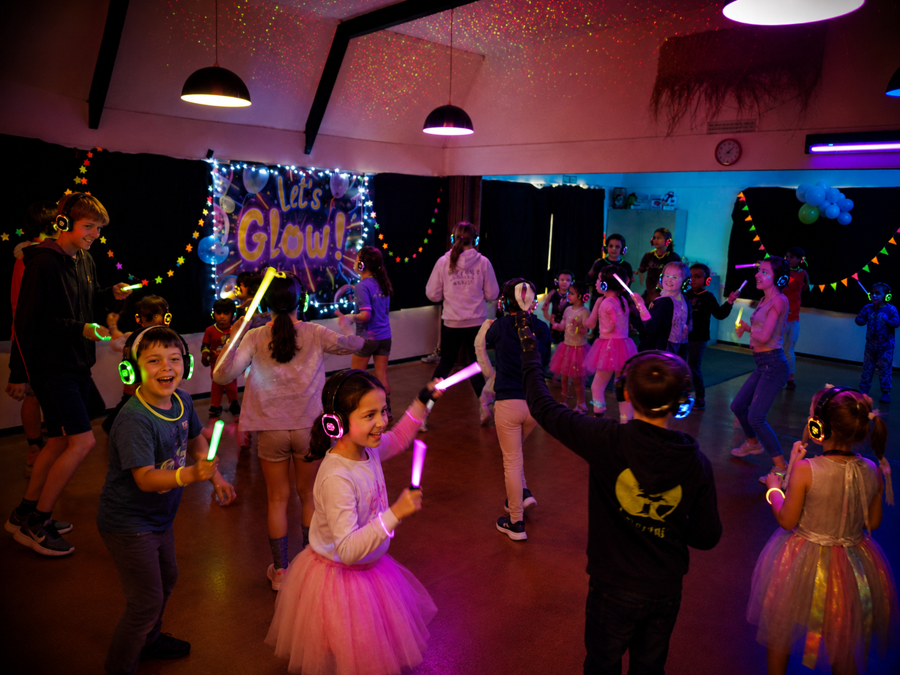
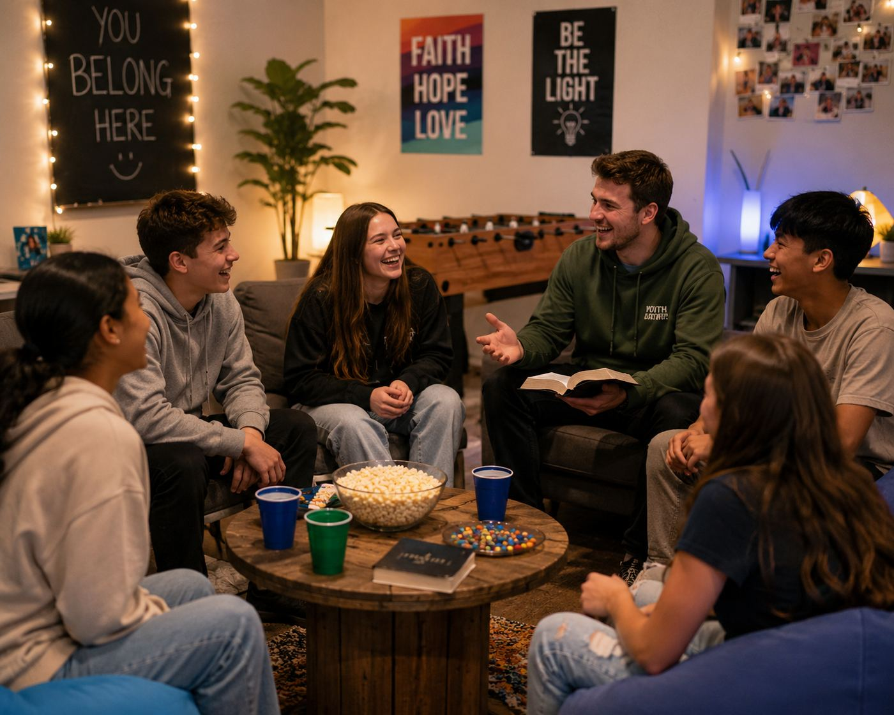

A place to call home and a place to serve, together. Kendal House is intentional Christian community for young adults and students, right next door to paid ministry roles at St Timothy's.
The Anglican Parish of Burnside-Harewood is opening the door on a new way for young adults to belong: Kendal House, a shared home for intentional Christian living, sitting alongside a handful of part-time paid ministry roles at St Timothy's. Each is worth exploring on its own — but they were built to go together. Take on a ministry role and you'll be offered subsidised accommodation at Kendal House, so you can serve your community without worrying about how to afford a roof over your head.
Whether you come for the accommodation, the ministry experience, or both, you'll find a supportive, faith-filled household — with great bus access to the University of Canterbury and the city, close to Laidlaw College, and a church family who wants to see you flourish.
We currently have four paid ministry roles which are open to anyone — you don't need to live at Kendal House to apply. But for anyone hunting for a flat and real, hands-on ministry experience, this is about as good as it gets.
Have a look through whichever door speaks to you first — you can always read about the other from here.

Subsidised, intentional Christian living for young adults and students in Burnside. A supportive flat with housemates who share your faith, good bus links to Laidlaw and UC, and a household rhythm built around living out your faith with others.
Discover Kendal House
Three part-time, paid ministry roles — leading youth, walking alongside intermediate-age students, and supporting our children's ministry. Real responsibility, real mentoring, and real income, with subsidised accommodation at Kendal House on offer.
See the rolesChoose from youth ministry, intermediate ministry, or children's support work at St Timothy's. All are part-time and paid, and open to anyone with a heart to serve.
Ministry team members are offered subsidised accommodation at Kendal House, taking the pressure off finding and paying for a flat while you're studying or starting out.
Settle into a household that shares your faith, serve alongside a church that backs you, and grow — in ministry experience, in community, and in purpose.


Whether it's a place to live, a role to grow into, or both — get in touch and let's have a chat about what fits.